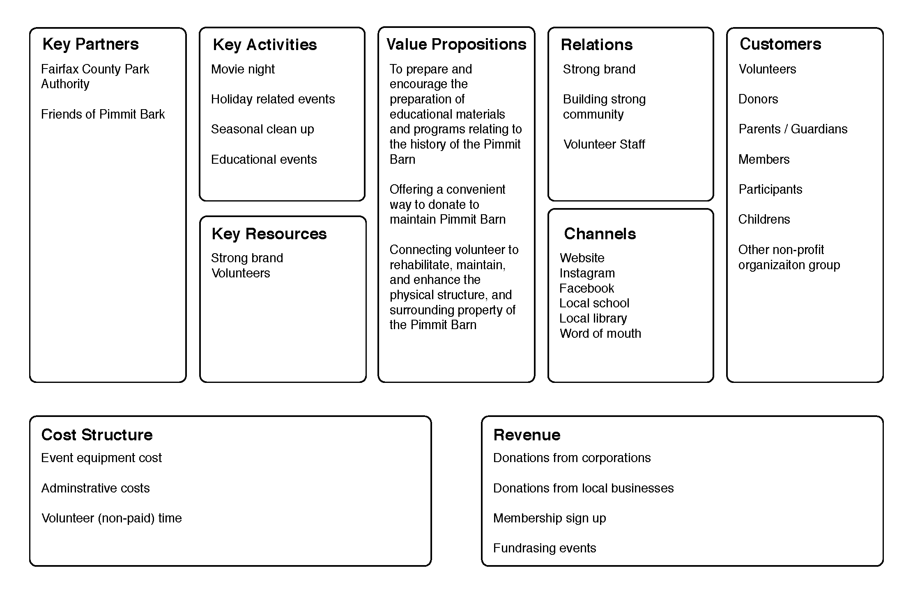
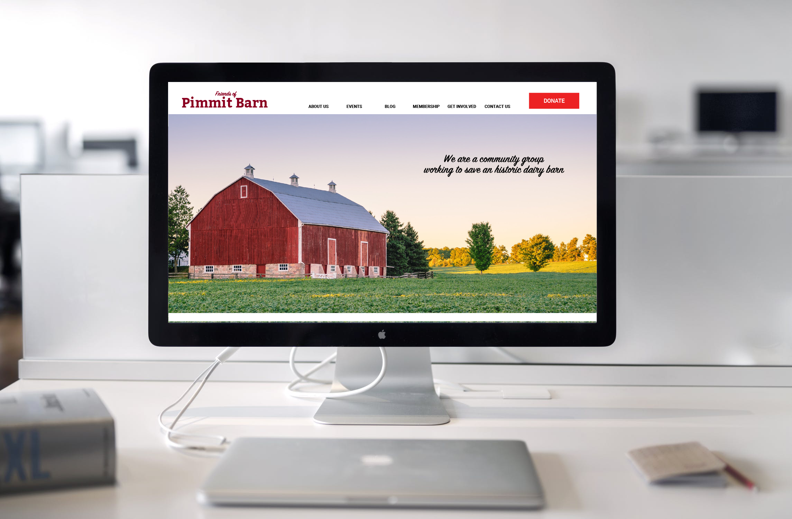

Who is Friends of Pimmit Barn?
Friends of Pimmit Barn (FOPB) is a non-profit organization that was organized for historical
and education purposes for the benefit of pimmit hills and northern Virginia community.
The purpose of Pimmit Barn is to bring community together and continue to maintain, support
and preserve the historical barn landmark that was built in 1937.
PROJECT OVERVIEW
Non-profit client will like to have their website redesign. Due to lack of resources and budget,
I volunteer my time to help organization to improve user's engagement on website.
Project Scope
Problems:
Lack of engagement on the website.Pain point:
After using the website, I found few problems:- Not enough visual content.
- Structure flow of the website is a little confusing.
- Need improve on create content that bring user's engaging the website.
Project Goals:
To redesign the front page of the website.Tools Used:
Sketch, Invision, Adobe PhotoshopRoles Played:
User Experience and ResearchResearch: Interview with Client and Users
Client: Pimmit Barn host events at least once every one to two month and the
events varies from outdoor movie night, clean up volunteer, holiday,
educational workshop. The audience who attends the event varies from
children to parents to seniors. The main target audience are parents
whose kids are from 3-12 years old and live around 5 miles radius.
User: I had permission to interview parents / guardians at the event. I asked a
set of questions to understand their backgrounds, goals and feedbacks
about the organization. This will help me understand in depth of the
user’s goal as well as their perception of the organization.
Research: Non-Profit Organization best practices
Since this is a non-profit organization website, I will need to audit and research the best practices. This will help me understand better the standards of creating non-profit organization website for Pimmit Barn.

Research: Understanding the current sitemap
The goal is to analyze and evaluate the existing website to find out what’s currently on the webpage and as well as the content. This helps me understand current user’s journey.
Define: Identify Goals
Business Goals
- Improve brand awareness for increase attendance to Pimmit Barn’s events
- Increase individual contribution to come out and help supporting the local community
User's Goals:
- To be able to see view calendar of events online
- Ability to view events on various platform of social media
- View photos of events
- Ability to view volunteer opportunities
Non-Profit Business model Canvas
Define: Redesign User Flow
Restructure the sitemap based on the research and following the non-profit organization best practices.
Low to High Fidelity wireframing
Creating a low fidelity wireframe to present to the client on functionality of the website and understand the user and business goals. Then creating a high fidelity wireframe based on the branding and color style to present to the business.
Here is the redesign of the Pimmit Barn Home page.
Results
I was able to collect information based on research to present the proposal to the client. The results helps Pimmit Barn to understand their non-profit organization better. I have learned a lot new ideas from non-profit organization that I did not expected before. By doing in-depth research, I learn how non-profit organization business model works and its webpage best practices. It is totally different from running regular business website and models.
© Copyright Edward Chen. All Rights Reserved